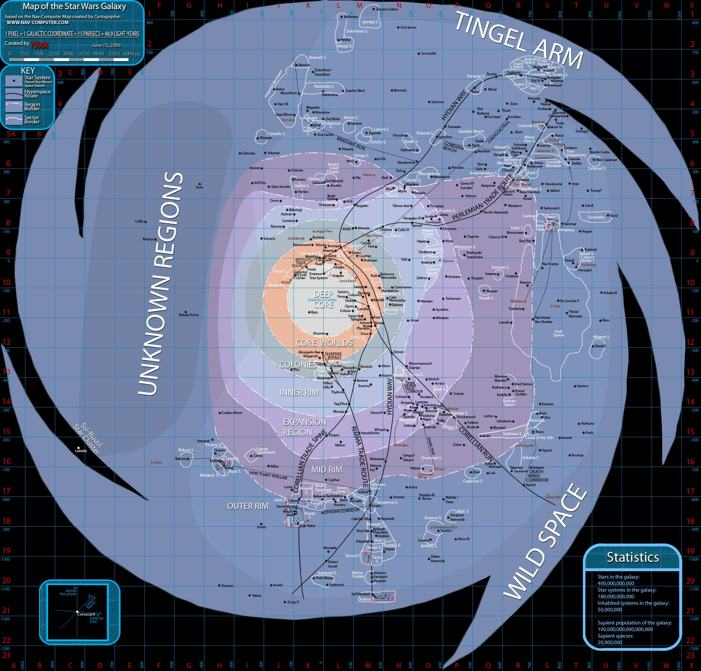

Welcome to the site for the Republic Renaissance campaign for SW5e! On this site you will find all the resources needed to start running this custom campaign with your parties. This campagins was designed using the SW5e rules for Dungeons and Dragons. Links to those sources can be found on this page, however, you will not need to understand the game mechanics to get a feel for this campaign and how it is run. This page will not cover the rules of those games. This site will focus on the setting for this campaign, how to prepare for it as a player, and links to all available modules for the DM to download and use.
Learn more about Star Wars Fifth Edition below!
D&D SW5eLearn more about Dungeons and Dragons below!
Dungeons and DragonsSo, when does this all take place? Well the campaign starts in the year 799 BBY (Before Battle of Yavin). For context, the Jedi Sith War would have ended in the year 1022 BBY and the Galactic Republic as we know it would have been formed in the year 1019 BBY. This puts our story after the Old Republic but well before the events of Episode One.
There is not much official official information about this time period in the Star Wars universe, however, we are able to make a few safe assumptions. First, with the Jedi Sith war ending 223 years ago, it is safe to assume that the Galactic Republic is still recovering from the previous conflict, which lasted hundreds of years. Although they have had time to build their strength and become a superpower in the universe, they are not yet as strong as they are during the Clone Wars. That is where the name Republic Renaissance comes from. The Republic is in a stage of expansion, hoping to add more worlds to the senate, and reclaim some of it's former glory.
Another thing we know about this time is that the Sith are a shadow of their formerselves. At the end of the war, Darth Bane enacted the Rule of Two. This meant that at any time there could only be two sith, a master and an apprentice. However, at their height, the Sith Empire controlled a large portion of the galaxy. For this reason, this campaigns works under the assumption that there are a significant number of Sith cultist remaining who still practice the old ways of the Sith (and who can be used as canon fodder for your mighty party of adventurers).
With all of this known, who are the major players in the galaxy? Well the Galactic Republic is a strong contender for strongest in the galaxy, but are certainly not the only ones vying for control. Below are some other factions currently making an impact in the galaxy:
The information on this page is in no way, shape, or form a part of official Star Wars legends or canon. Although research has been conducted to ensure that the campaign is feasibly accurate, this is a fictional work by Patrick Glazier and has no associate with Lucas Arts, Disney, or any other party directly affiliated with the Star Wars franchise and it's related properties.